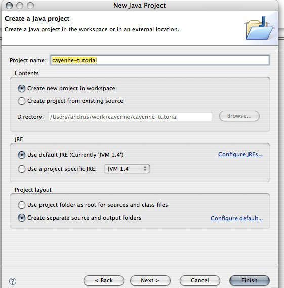
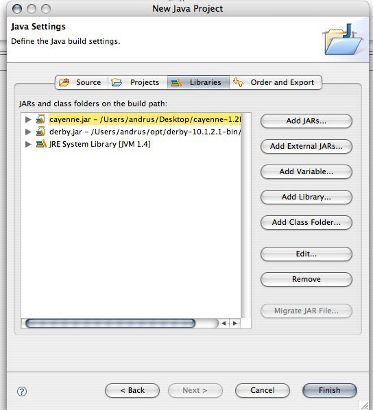

Tutorial Setup
Make sure you have Java installed (JDK 1.4 or 1.5).
Get the latest Cayenne distribution. If you are on Linux, select a cross-platform version (cayenne-XXX.tar.gz). For Mac OS X select cayenne-XXX-macosx.dmg and for Windows - cayenne-XXX-win.zip. Unpack the distribution somewhere in the file system.
distribution. If you are on Linux, select a cross-platform version (cayenne-XXX.tar.gz). For Mac OS X select cayenne-XXX-macosx.dmg and for Windows - cayenne-XXX-win.zip. Unpack the distribution somewhere in the file system.
Get Derby database from here and unpack it somewhere in the filesystem.
and unpack it somewhere in the filesystem.
Download Eclipse from here and unpack it somewhere in the filesystem.
and unpack it somewhere in the filesystem.
Start Eclipse and go to "File > New > Project". Select a "Java Project" for the project type and click "Next":

Enter "cayenne-tutorial" for the project name, select "Create separate source and output folders" radio button and click "Next":

On the next screen ("Java Settings") go to the "Libraries" tab and click "Add External Jar" button on the right to add two Jar files:

When done click "Finish" and the new project should appear in Eclipse.
Next Step: Tutorial Starting Mapping Project